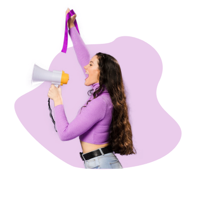
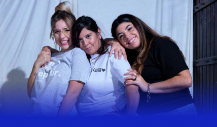
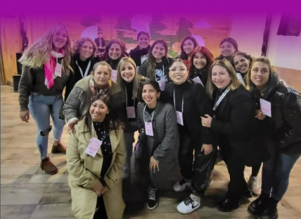

Oye chica
Somos una comunidad activa de mujeres, que no solo asiste a mujeres
sobrevivientes de violencia y vulnerabilidad, sino que también se capacita y acompaña a
todas aquellas que quieran superarse en calidad de vida y cultura. Generar herramientas
desde el Estado para la autonomía económica de las mujeres es fundamental para desarmar
estas desigualdades históricas.
Es sabido que existen diferenciaciones socioeconómicas
que llevan a que no todas las personas se encuentren en igualdad de condiciones a la hora de
insertarse en el mercado laboral. Entre estas diferenciaciones, existe una brecha de género
que afecta a todas las mujeres e identidades feminizadas, que implica tanto una brecha
salarial como de condiciones laborales.


Oye chica!
El género no es una categoría aislada. No puede pensarse que afecta del mismo a todas las personas.
Una mirada interseccional supone que las formas de privilegios, opresiones y desigualdad no funcionan de forma independiente,
sino interrelacionada, y que conforman un sistema que conecta múltiples formas de discriminación.
Así, el género se entrelaza con otras categorías como son la etnia, la clase social, la orientación sexual o la (dis)capacidad.
No será igual la vivencia de una mujer blanca que de una racializada, de un varón trans o de una mujer con discapacidad motriz,
y asi sucesivamente.
Oye Amor
Desconocer la perspectiva de género en la elaboración de proyectos puede reproducir desigualdades,
profundizarlas e incluso crear nuevas. Promover politicas con esta perspectiva de género permite elaborar diagnósticos
más completos y complejos, generar abordajes que contemplen más cabalmente a la población en su conjunto, pudiendo diferenciar
cómo perciben y son afectadas las distintas personas y cómo generar un impacto más positivo.
Debe aplicarse a cualquier proyecto, dando respuesta a las distintas necesidades implicadas, y buscando evitar la reproducción
de las desigualdades, así como promoviendo abordajes un poco más transformadores que los actuales


 144
144